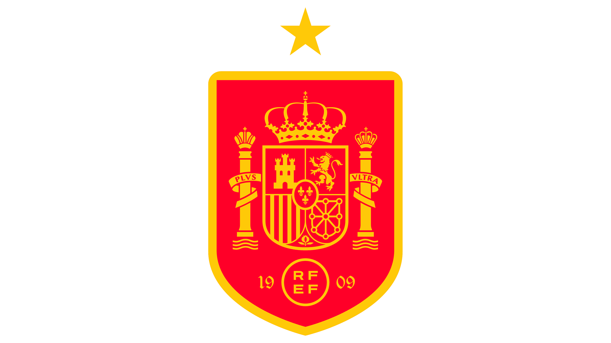
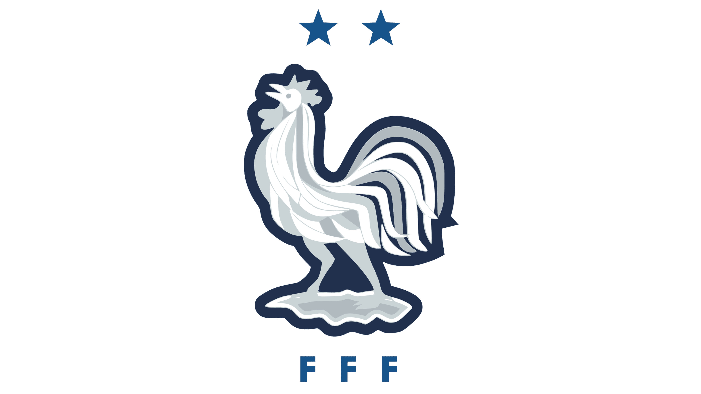
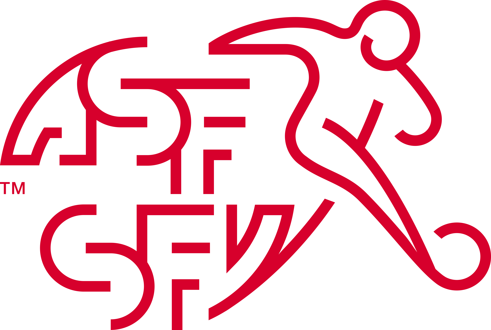
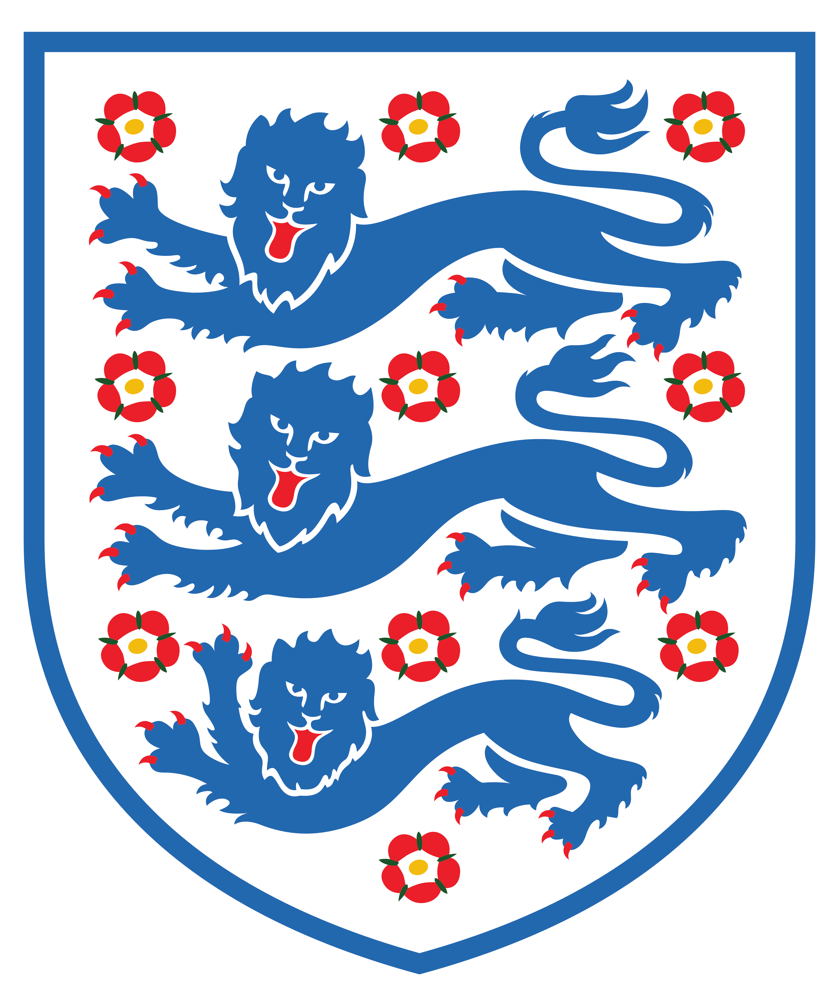

Half Time Coach

Half Time Coach is a project designed to ease the interpretation of a football match from an analytical point of view. It aims to make the viewer to watch football from another perspective, transforming a spectator from a fan to a coach sitting on the bench, encouraging his players at half time by showing videos of their positive actions. There positive actions are named "Useful Actions". Each video shows only the first half of a specific team. #ThatsHowWeWatchFootball

SPAIN vs. France
15.07.2026

What we may notice more in the future: Spain dribbling in opposition box, long balls fom 1/3 of the pitch to escape pressure, Cucurella crosses with left foot, aerial duels, high pressing until goalkeeper, GK high positioning, Cucurella using his right foot to escape pressure

SWITZERLAND vs. Argentina
17.07.2026

What we may notice more in the future: Left Winger (Ndoye) 1v1 dribbling on the wing, cutting passes through the lines (breaking the lines), midfielders joining pressing lately in middle of the pitch, clearing crosses, doing crosses from right wing targeted on the second recipient.
ARGENTINA vs. England
17.07.2026

What we may notice more in the future: breaking the lines, high pressing until the goalkeeper, Lisandro Martinez positioning to clear the ball.... Messi dribbling !
FRANCE vs. Morocco
17.07.2026
What we may notice more in the future: Mbappe shots near the box, Mbappe crosses from HalfSpace, Midfielders coming back to protect in counter attacks, Mbappe dribbling inside the box ! Doue solo runs, Pressing on the wings 3v3, Digne long shots.
MY X.com. RUSSIA vs. Burkina Faso, SPAIN vs. Argentina in archive. Other matches will be covered too in the future, feel free to join me on x.com and any feedback will be appreciated. The videos done are made in analytical and teaching purposes and do not mean in any case to violate the copyright permissions of owners.
Spain vs. Fra, 1st half, most "useful" moments for Spain. Notice Cucurella using his right foot pic.twitter.com/gbiaEjoXcN
— Kamran (@45minscoach) July 15, 2026